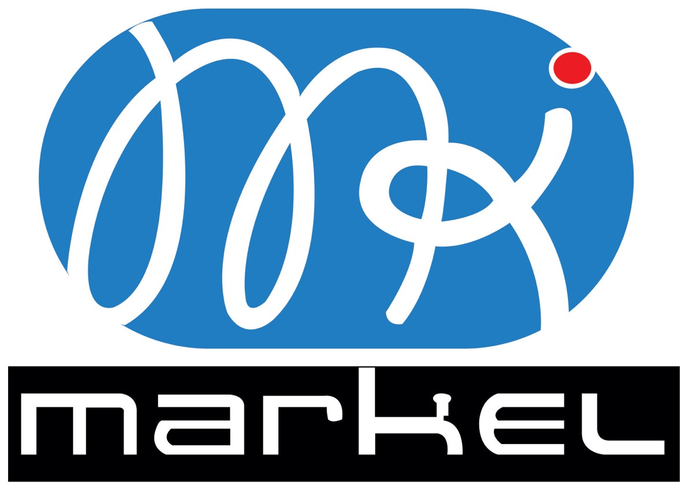

Click the link of your class, log in, and you are in the Studio. A big window asks you to start: click “Démarrer le direct”. Nothing to prepare beforehand: slides, videos and documents can be added during the class.
Your class
1Click your linkThe link of your class, sent by 2IAE
2Log inE-mail or phone, then your password
3Start“Démarrer le direct” in the big window
4Allow camera and micClick “Allow” if the browser asks
Conception et développementJosé KouadioConcepteur et développeur du campus

Réalisé parMarkel TechnologyAgence Markel-Tech Inc.
Adressecampus.2iae.comGroupe Écoles 2IAE International
Steps 1 and 2 · about one minute
Click your link, then log in.
1
Click the link of your class
Open it on a computer, in Google Chrome (or Edge). It looks like campus.2iae.com/live/… and takes you to the login page.
2
Log in
1 Type your e-mail or your phone number(E-mail, téléphone ou matricule).
2 Type the password you chose when you created your account.
3 Click Entrer dans mon campus.
Forgot your password?
4 Click “Code oublié ?” under the button and type your e-mail. You receive a link by e-mail (valid for one hour) to choose a new password. Then click the link of your class again.
That is all: after the login, you land directly in the Studio of your class.
When you arrive in the Studio, a big window opens. Click Démarrer le direct1: the five campus rooms and the students online see and hear you.
4
Allow camera and mic
If your browser asks to use your camera and microphone, click “Allow”(Autoriser). It only asks the first time.
campus.2iae.com/live/…
The window appears from 45 minutes before your class. “Pas encore : voir le studio d'abord” closes it: the same orange button stays at the top of the Studio.
You are live
The red label “EN DIRECT”1 shows the time since the start. The red button becomes “Terminer”2: use it only at the end. The class is recorded for the replay.
Click Ajouter des diapos1 and choose your PowerPoint, a PDF or images. A PowerPoint takes about a minute to convert. The slides then appear on the room screens and on the students' phones.
Change slides with the keyboard arrows ←→ or the orange arrow 3. To add more slides later: Ajouter2.
Videos and documents
Under the slides, in “Vidéos et documents”, click Ajouter ou modifier4. Paste a YouTube link5 and click Ajouter6, or click “Ajouter des fichiers”7 for a video, PDF or Word file from your computer.
Then click “Projeter”8 to play a video on the big screens of the five rooms. Students can download the documents.
Click the red button Terminer at the top, then “Terminer le direct”1. The rooms and the students are told the class is over. The replay and a revision sheet are prepared automatically.
Clicked by mistake? Choose “Continuer le cours”.
If something goes wrong
What happens
What to do
No camera image
Check that “Caméra activée” and “Micro activé” are orange, under the video. If the browser blocked them, click the camera icon in the address bar, choose “Allow”, then reload the page (F5).
The page freezes
Reload the page (F5). The class continues and the rooms stay connected.
You closed the window
Click your link again. You find your class where you left it.
The students cannot hear you
Check that “Micro activé” is orange. A headset with a microphone gives much better sound.
Your connection is very weak
Turn off your camera (“Caméra coupée”): your voice and your slides keep going.
Good to know
Use a computer (not a phone) with Chrome or Edge, plugged in, with a stable connection. Click your link 10 minutes early: you can check your camera before the students arrive. Questions, raised hands and the class chat are in the tabs on the right of the Studio, if you want to use them.